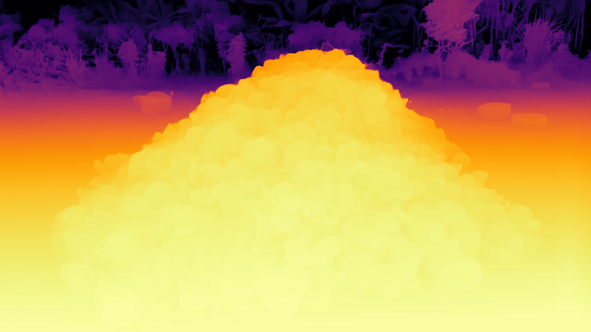
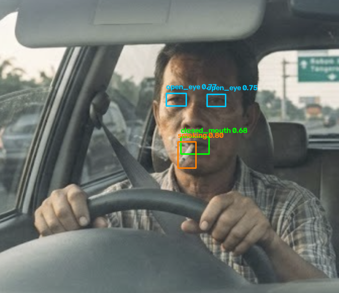
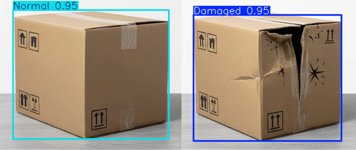
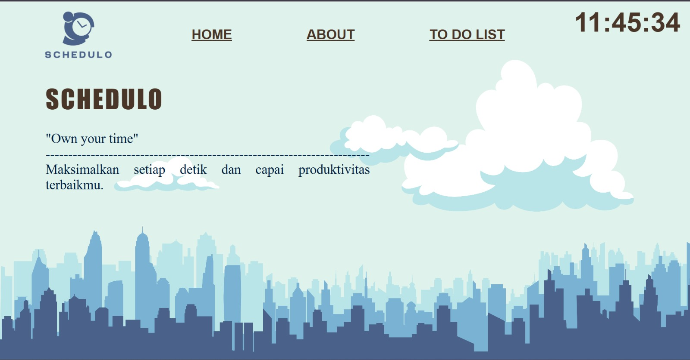

AI & Computer Vision Enthusiast • Software Developer • IoT • Cybersecurity Enthusiast
Welcome to my little corner of the internet, where I share the things I've built, learned, and continue to explore.
Every project starts with a problem to solve and ends with something useful, beautiful, and fun to build..

Artificial IntelligenceA computer vision tool that estimates the volume (m³) and tonnage (ton) of a coconut shell stockpile.
View project →
Artificial IntelligenceA real-time computer vision system that monitors a driver to detect signs of fatigue and unsafe activities (smoking, vaping, phone use) while driving.
View project →
Artificial IntelligenceA computer vision program that detects the condition of boxes/packages (damaged/normal) in real-time via webcam, from images, or from video files.
View project →
Web DevelopmentPython Flask-based To-Do List web app designed to help users manage their daily schedules more efficiently and in an organized way.
View project →